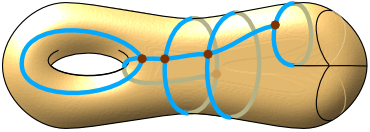
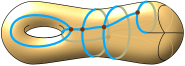

|
Francis Lazarus Directeur de recherche au CNRS |
 |

|

|

|
|
| ||||
|
Francis Lazarus Directeur de recherche au CNRS |
 |
|
|
|
|
| ||||
Computing the second and third systoles of a combinatorial surface. Matthijs Ebbens and Francis Lazarus. To appear in ACM-SIAM Symposium on Discrete Algorithms (SODA25), Jan 2025. Version arXiv.
A Linear Bound for the Colin de Verdière Parameter μ for Graphs Embedded on Surfaces. Camille Lanuel, Francis Lazarus and Rudi Pendavingh. SIAM Journal on Discrete Mathematics, 38(3): 2289-2296, 2024. Version arXiv.
A Universal Triangulation for Flat Tori. Francis Lazarus and Florent Tallerie. Discrete & Computational Geometry, 71(1): 278–307, 2024. Version éditeur non imprimable, Version arXiv. (Also appeared in Proc. SoCG'22,  .) Quelques jolies images sur IMAGINARY.org.
.) Quelques jolies images sur IMAGINARY.org.
The Hyperbolic Plane in E³. Vincent Borrelli, Roland Denis, Francis Lazarus, Mélanie Theillière and Boris Thibert. 2023, version arXiv.
Algorithms for Length Spectra of Combinatorial Tori. Vincent Delecroix, Matthijs Ebbens, Francis Lazarus, and Ivan Yakovlev. Proc. SoCG'23  . Version arXiv.
. Version arXiv.
Algorithms for Contractibility of Compressed Curves on 3-Manifold Boundaries. Erin Wolf Chambers, Francis Lazarus, Arnaud de Mesmay, and Salman Parsa. Discrete & Computational Geometry, 70(2):323–354, 2023. Version éditeur non imprimable, Version arXiv. (Also appeared in
Proc. SoCG'21  ).
).
Computing the Geometric Intersection Number of Curves.
Vincent Despré and Francis Lazarus. Journal of the ACM, 66(6):1-49, 2019.  (Also appeared with
Best paper award in Proc. SoCG'17
(Also appeared with
Best paper award in Proc. SoCG'17  ).
).
An explicit isometric reduction of the unit sphere into an arbitrarily small ball. Evangelis Bartzos, Vincent Borrelli, Roland Denis, Francis Lazarus, Damien Rohmer and Boris Thibert.
Foundations of Computational Mathematics (FoCM), pp. 1-28, 2017. doi:10.1007/s10208-017-9360-1. 
Some Triangulated Surfaces without Balanced Splitting. Vincent Despré and Francis Lazarus. Graphs and Combinatorics, 32(6): 2339-2353, 2016. doi:10.1007/s00373-016-1735-6. Version arXiv.
Finding shortest non-trivial cycles in directed graphs on surfaces.
Sergio Cabello,
Éric Colin de Verdière and
Francis Lazarus. Journal of Computational Geometry,
7(1):123-148, 2016.  (Also appeared in Proc. SoCG'10)
(Also appeared in Proc. SoCG'10)
Combinatorial Graphs and Surfaces from the
Computational and Topological Viewpoint
Followed by some notes on
The Isometric Embedding of the square Flat
Torus. Mémoire d'habilitation à diriger des recherches soutenue le 16 septembre 2014. 
Isometric embeddings of the square flat torus in ambient space. Vincent Borrelli, Saïd Jabrane, Francis Lazarus and Boris Thibert. Ensaios
Matemáticos, 24:1-91, 2013. 
The Nash-Kuiper process for curves. Vincent Borrelli, Saïd Jabrane, Francis Lazarus and Boris Thibert. Actes du séminaire de théorie spectrale et géométrie, 30:1-19, 2011-2012. 
On the homotopy test on surfaces with boundaries. Julien Rivaud and
Francis Lazarus. 28th European Workshop on Computational Geometry (EUROCG), pp. 189-192, 2012. 
On the homotopy test on surfaces. Francis Lazarus and
Julien Rivaud. proc. IEEE Symposium on Foundations of Computer Science
(FOCS), pp. 440-449, 2012. Version soumise  . Une version plus détaillée sur arXiv.
. Une version plus détaillée sur arXiv.
Flat tori in three dimensional space and convex integration.
Vincent
Borrelli,
Saïd Jabrane,
Francis Lazarus
and Boris
Thibert.
Proceedings of the National Academy of Sciences of the United
States of America (PNAS), 109(19):7218-7223,
2012. Dossier de
présentation. Version soumise  et une jolie
figure.
et une jolie
figure.
Finding cycles with topological properties in embedded graphs.
Sergio Cabello,
Éric Colin de Verdière and
Francis Lazarus. SIAM Journal on Discrete Mathematics, 25:1600-1614, 2011.

Algorithms for the edge-width of an embedded graph.
Sergio Cabello,
Éric Colin de Verdière and
Francis Lazarus. Computational Geometry: Theory and
Applications, 45(5-6):215-224, 2012.  (Also appeared in Proc. SoCG'10)
(Also appeared in Proc. SoCG'10)
Persistence-sensitive simplification of functions on surfaces
in linear time. Dominique Attali, Marc Glisse, Samuel Hornus,
Francis Lazarus and Dmitriy Morozov. TOPOINVIS'09
(Topological
Methods In Data Analysis and Visualization), 23-24
Feb. 2009, Snowbird.
 Additional pictures.
Additional pictures.
Homotopic Fréchet distance between curves --- or, walking your dog in the woods in polynomial time.
Erin W. Chambers,
Éric Colin de Verdière,
Jeff Erickson,
Sylvain Lazard,
Francis Lazarus and
Shripad Thite.
Computational Geometry: Theory and Applications, 43:295-311,
2010.
 (Also appeared in
Proc.
SoCG'08 .)
(Also appeared in
Proc.
SoCG'08 .)
Splitting (complicated) surfaces is hard.
Erin W. Chambers,
Éric Colin de Verdière,
Jeff Erickson,
Francis Lazarus and
Kim Whittlesey.
Computational Geometry: Theory and Applications, 41:94-110, 2008 (Also appeared in Proc. SoCG'06). Submited version 
Optimal Pants Decompositions and Shortest Homotopic Cycles on an Orientable Surface. Éric
Colin de Verdière and Francis Lazarus. Journal of the ACM, 54(4),
art. 18, jul. 2007. (Also appeared in Proc. Graph Drawing, 2003). Submited version 
Optimal System of Loops on an Orientable Surface. Éric Colin de Verdière and Francis Lazarus. Discrete & Computational Geometry. 33(3): 507 - 534, 2005. (Also appeared in Proc. FOCS'02.) Abstract and electronic copies.
Computing a Canonical Polygonal Schema of an Orientable Triangulated
Surface. Francis Lazarus, Michel Pocchiola,
Gert
Vegter and Anne Verroust.
17th
ACM Symposium on Computational Geometry, pp. 80-89, June 2001. Submited version 
Cutting and Stitching: Converting Sets of Polygons to Manifold Surfaces. Anne Guéziec, G. Taubin, Francis Lazarus and William Horn. IEEE Transactions on Visualization and Computer Graphics, 7(2):136-151, 2001.
Extracting skeletal curves from 3D scattered data. Anne Verroust and Francis Lazarus. The Visual Computer. Springer, 16(1):15-25, 2000.
Level Set Diagrams of Polyhedral Objects. Francis Lazarus and Anne Verroust. ACM Solid Modeling'99. June 1999, Ann-Arbor, Michigan, USA.
A Framework for Streaming Geometry in VRML. André Guéziec, Gabriel Taubin, Francis Lazarus and William Horn. IEEE Computer Graphics and Applications, 19(2):68-78, 1999.
Three-dimensional metamorphosis: a survey. Francis Lazarus and Anne Verroust. The Visual Computer, 14(8-9):373-389, 1998.
Progressive Forest Split Compression. Gabriel Taubin, André Guéziec, William Horn and Francis Lazarus. Siggraph'98 Conference Proceedings. August 1998, Orlando, Florida, USA.
Geometry coding and VRML. Gabriel Taubin, William Horn, Francis Lazarus and
Jarek Rossignac. Proceedings of the IEEE, 86(6):1228-1243,
1998. 
Smooth interpolation between two polylines in space. Francis Lazarus. Computer Aided Design, 29(3):189-196, 1997.
Axial deformations: an intuitive deformation technique. Francis Lazarus, Sabine Coquillart and Pierre Jancène. Computer Aided Design, 26(8):607-613, 1994.
Paquet Surface Mesh Topology de la bibliothèque C++ CGAL. Guilliaume Damiand and Francis Lazarus. 2020.
ENSEIGNEMENT
[ G-SCOP | Recherche | Images | Publications | contact ]